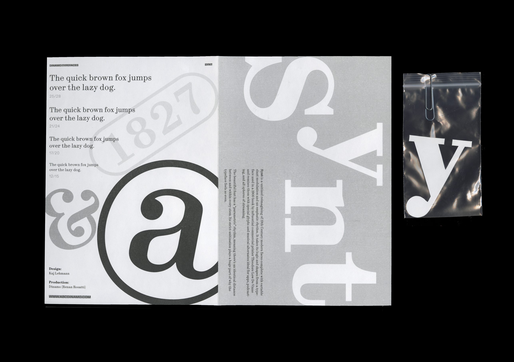
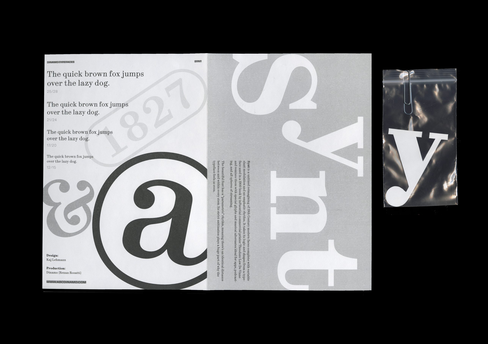

ABC Dinamo Type Specimen
Spring 2024
Type Specimen Design
This type specimen is to display three of my favorite typefaces from type foundry ABC Dinamo. Exploring the potentiality of bringing a digital typeface to print, I compiled the three zines in a folder mimicking the digital folder, and put type cutouts in evidence bags playing with the idea of a “specimen”.

 
